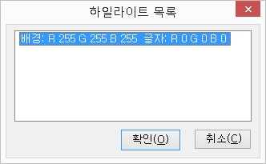

현재 읽기포인터가 위치한 글자의 배경색과 글자색을 하일라이트로
설정합니다.
하일라이트란 메뉴나 아이콘, 컨트롤 등에서 포커스를 표시하기 위해 다른 컨트롤들과 비교해 바탕색과 글자색에 변화를 주는 방법을 의미합니다.
이 기능은, 화면변화읽기 방법 중 하일라이트 읽기에 적용되는 하일라이트를 지정하는 것이며, 하일라이트 읽기는 기본 하일라이트의 사용도 가능합니다.
이야기멀티, 아크로 에디터 등의 메뉴를 읽을 때 지정해 놓으면
편리합니다.
현재 지정된 하일라이트 목록을 보여줍니다.

각 목록은 RGB 색상 표시 방법을 사용하여 '배경: R G B 글자: RGB'과 같은 형식으로 표시됩니다.
목록 항목을 삭제하기 원한다면 해당 목록에서 <Del>키를 눌러 삭제할 수 있습니다.